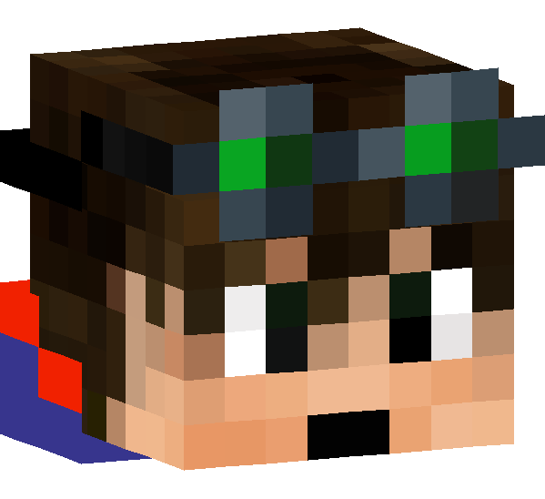

Sirenkonett
Minecraft Datapack Developer
--
Jahre alt
5+
Jahre Erfahrung
Über mich
Ich entwickle Minecraft Datapacks mit Fokus auf gute Architektur und sauberem Code. Meine Expertise liegt in der Optimiert Systeme durch effiziente Nutzung Minecraft-Features.
Datapack Expertise
Modulare Architektur
Baukasten-Prinzip statt Monolithen. Klare Trennung durch list, sidebar und reset Funktionen.
Logik-Zentrale
Scoreboards als Steuer-Schalter, nicht nur Anzeige. Intelligente ticks.mcfunction.
Performance
Nutzung nativer Features wie Internal Health. Keine rechenintensiven Algorithmen.
Game-Design
Event-gesteuerte Programmierung: Tod, Reset, Item-NBT-Erkennung.
System-Architektur
Fortgeschrittenes Execute-Wissen und komplexe Ingame-Steuerungssysteme.